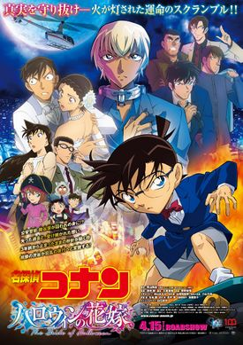

POPULAR ON ANIME

Bubble
Anime movie based in a post-apocalyptic Tokyo where the rules of gravity are different and youngsters indulge in parkour battles.
Download

Detective Conan: The Bride of Halloween
The Bride of Halloween will focus on a mystery involving a dangerous and mysterious bomber called Plamya
DownloadA Whisker Away
A peculiar girl transforms into a cat to catch her crush's attention. But before she realizes it, the line between human and animal starts to blur.
Download

COMMENTS
Nice! Good show it's another isekai anime. A lot of animes of the same genre has come out by now and if you still don't feel tired watching them, then this one won't hurt to try.
Charlene Joy
OMG! As in O to the M to the G! 3 points ka sakin :)))) Nice! Good show it's another isekai anime.
Dyamayka Shoot!